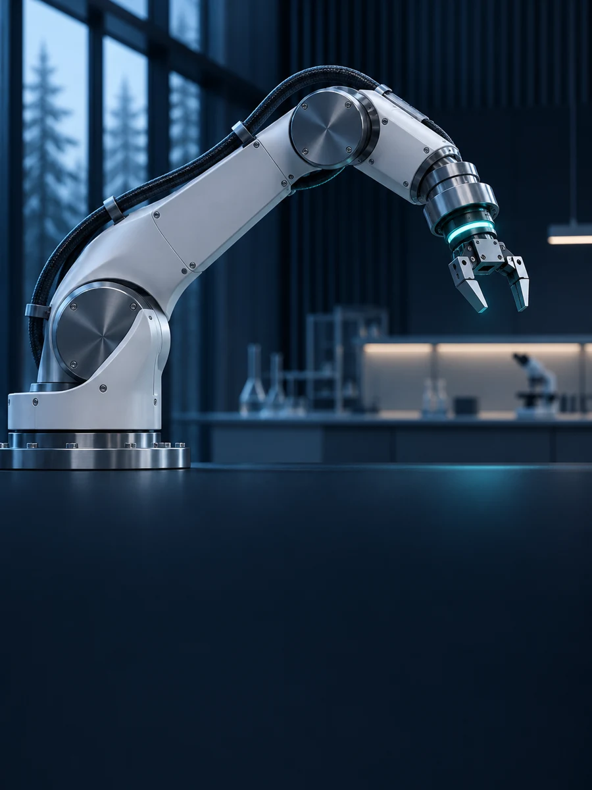

02 / Robotics AI
IN DEVELOPMENTIntelligence.
In motion.
Robotics AI is a new area of exploration for Nordic Labs Tech Oy. This section will introduce the direction and scope as they take shape.
More to come.
Explore Nordic Labs Tech OyImage is an illustrative concept.
